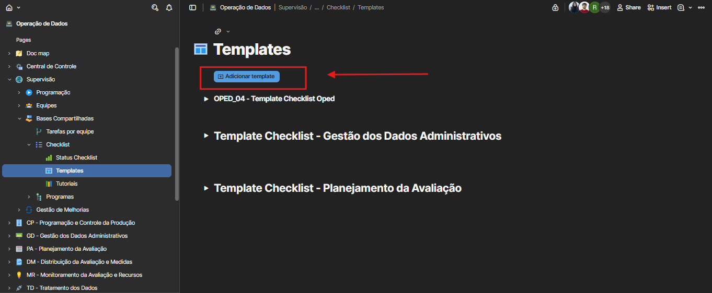
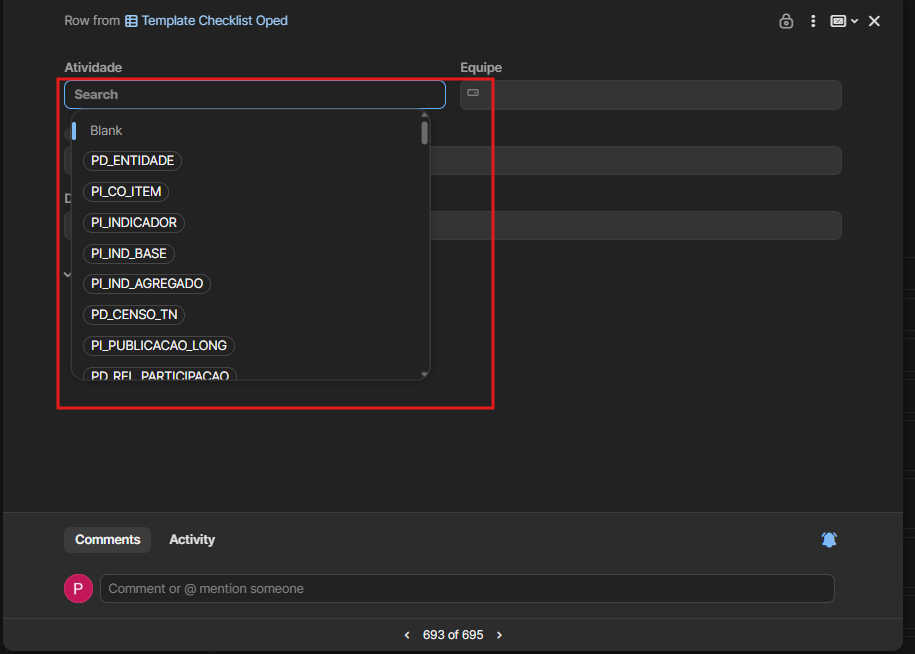
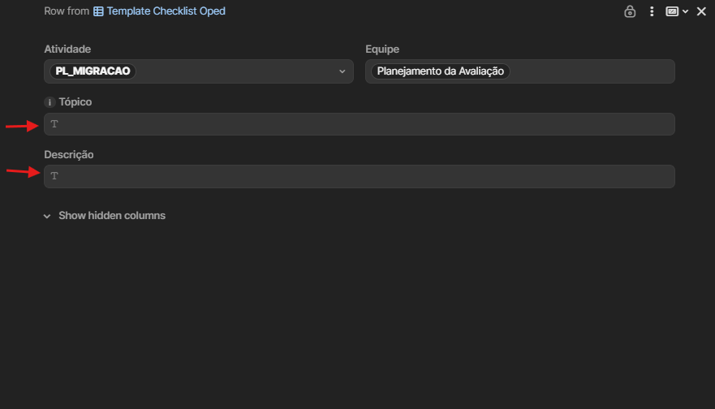

📋 COMO CADASTRAR UM CHECKLIST
Na lista de documentos, clique em "Operação de Dados" para acessar a área de trabalho principal.

Clique no documento "Operação de Dados" na lista de documentos disponíveis.
No painel de navegação esquerdo, siga o caminho hierárquico:
Esta é a área principal para gerenciamento de todos os modelos de checklist, onde você poderá visualizar, criar e modificar templates existentes.

A imagem mostra como navegar pela estrutura de pastas até chegar na seção Templates, destacando cada etapa do caminho.
Clique no botão "Adicionar Template" para iniciar o cadastro.

Para cada atividade a ser cadastrada, preencha os seguintes campos:


Existe outra maneira de adicionar tarefas novas diretamente no template. Este método é útil quando você precisa criar rapidamente um novo tópico ou tarefa dentro de uma atividade existente.
Após adicionar suas atividades, você pode reorganizar a ordem de exibição ou remover tarefas que não são mais necessárias.
Vídeo demonstrando como reordenar atividades arrastando com o mouse e como excluir tarefas usando o menu contextual